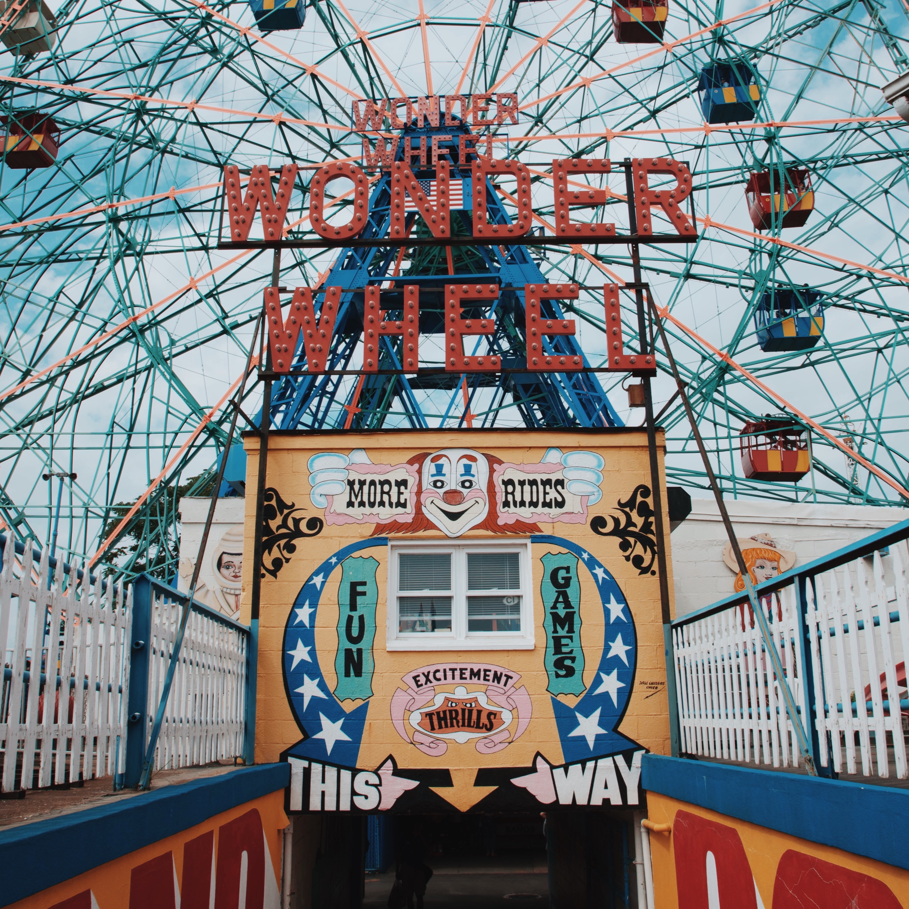

Clowns in the Past
Snapshots of the Past
Clowns used to be beloved people in the past which kids have been very fine with. They were in birthday parties, shows, and just found in any situation. They were socially acceptable, which contrasts their treatment now.

Historical Notes
- 1980s - Clowns were used as branding for horror
- 1990s - Clown jobs have rapidly started to drop
- 2005 - Hurricane Katrina hit the city with the largest Clown population.
- 2008 - Most people affected by the housing crisis were once professional clowns.